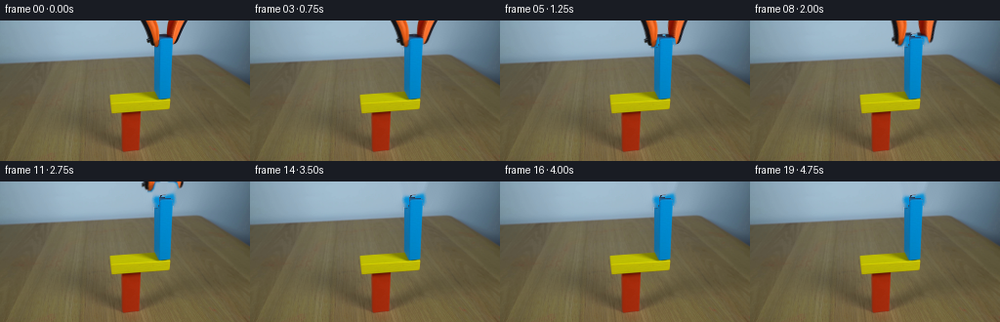
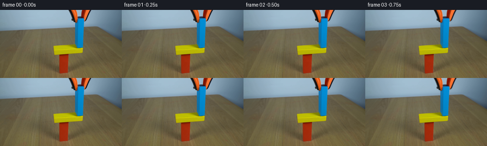
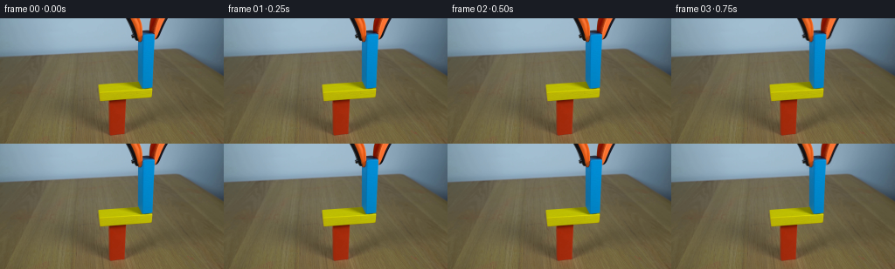

CODING AGENTS AS PIXEL WORLD MODELS
traex/GPT-5.6-Sol · 0182
点击播放 · 原生 RGB 像素
逐轮保存的候选
回放视频、检查图与代码变化。
每份候选均可单独播放。实际图片检查记录在下方工具轨迹中。
候选 01播放与检查图
点击播放 · 原生 RGB 像素


展开代码变化
--- 上一保存版本
+++ 本次保存版本
@@ -0,0 +1,112 @@
+"""Generate a locked-off animation of the grabber releasing the blue block."""
+from pathlib import Path
+import numpy as np
+import cv2
+from PIL import Image
+import artifact_io
+
+CASE_DIR = Path(__file__).resolve().parent
+
+
+def smoothstep(x):
+ x = np.clip(x, 0.0, 1.0)
+ return x * x * (3.0 - 2.0 * x)
+
+
+def build_tool_matte(rgb):
+ """Segment the orange/black jaws in the small top-center working area."""
+ hsv = cv2.cvtColor(rgb, cv2.COLOR_RGB2HSV)
+ h, s, v = [hsv[..., i] for i in range(3)]
+ yy, xx = np.mgrid[:rgb.shape[0], :rgb.shape[1]]
+ roi = (yy < 30) & (xx >= 142) & (xx <= 193)
+ warm = (((h < 30) | (h > 169)) & (s > 58) & (v > 48))
+ dark = v < 92
+ seed = ((warm | dark) & roi).astype(np.uint8) * 255
+
+ # Close pinholes in the painted jaws, then take one pixel of their antialiased rim.
+ seed = cv2.morphologyEx(seed, cv2.MORPH_CLOSE,
+ cv2.getStructuringElement(cv2.MORPH_ELLIPSE, (3, 3)))
+ core = cv2.dilate(seed, np.ones((3, 3), np.uint8), iterations=1)
+ matte = cv2.GaussianBlur(core.astype(np.float32) / 255.0, (5, 5), 0.72)
+ matte[seed > 0] = 1.0
+ matte *= roi.astype(np.float32)
+ return np.clip(matte, 0, 1), core
+
+
+def clean_plate(rgb, core):
+ """Remove the jaws while retaining the blue block and natural sky texture."""
+ # A broad removal support prevents warm edge colors leaking into inpainting.
+ support = cv2.dilate(core, np.ones((5, 5), np.uint8), iterations=1)
+ support[:30, :141] = 0
+ support[:30, 195:] = 0
+ plate = cv2.inpaint(rgb, support, 4.0, cv2.INPAINT_TELEA)
+
+ # Restore every known blue-block pixel. This protects its narrow upper corners
+ # where a dark rubber jaw lies immediately alongside it.
+ hsv = cv2.cvtColor(rgb, cv2.COLOR_RGB2HSV)
+ blue = ((hsv[..., 0] >= 88) & (hsv[..., 0] <= 137) &
+ (hsv[..., 1] >= 48) & (hsv[..., 2] >= 65))
+ keep = blue & (np.indices(blue.shape)[1] >= 157) & (np.indices(blue.shape)[1] <= 177) & (np.indices(blue.shape)[0] < 82)
+ plate[keep] = rgb[keep]
+
+ # At the one-pixel contact edge keep the original object boundary exact.
+ plate[80:83, 157:177] = rgb[80:83, 157:177]
+ return plate
+
+
+def transformed_half(color, alpha, direction, opening, rise):
+ """Pivot a jaw outward at its clipped top and translate it upward."""
+ # At y=27 the lower rubber tip moves `opening` pixels sideways.
+ shear = direction * opening / 27.0
+ mat = np.float32([[1.0, shear, 0.0], [0.0, 1.0, rise]])
+ size = (color.shape[1], color.shape[0])
+ c = cv2.warpAffine(color, mat, size, flags=cv2.INTER_LINEAR,
+ borderMode=cv2.BORDER_CONSTANT, borderValue=(0, 0, 0))
+ a = cv2.warpAffine(alpha, mat, size, flags=cv2.INTER_LINEAR,
+ borderMode=cv2.BORDER_CONSTANT, borderValue=0)
+ return c, np.clip(a, 0, 1)
+
+
+def composite(dst, src, alpha):
+ a = alpha[..., None]
+ return dst * (1.0 - a) + src.astype(np.float32) * a
+
+
+def generate():
+ first = np.asarray(Image.open(CASE_DIR / 'first_frame.png').convert('RGB'), dtype=np.uint8)
+ matte, core = build_tool_matte(first)
+ plate = clean_plate(first, core)
+
+ yy, xx = np.mgrid[:first.shape[0], :first.shape[1]]
+ # The pincers are separate physical halves. A narrow soft split avoids seams.
+ left_gate = np.clip((169.0 - xx) / 2.0, 0, 1).astype(np.float32)
+ right_gate = np.clip((xx - 166.0) / 2.0, 0, 1).astype(np.float32)
+ left_a = matte * left_gate
+ right_a = matte * right_gate
+
+ frames = []
+ for i in range(20):
+ if i <= 1:
+ # Contractually exact initial view, also giving a natural quarter-second hold.
+ frame = first.copy()
+ else:
+ # Rubber jaws open during 0.50--2.00 s, then the already-open tool
+ # rises smoothly out of the locked frame during 1.75--3.75 s.
+ opening = 7.0 * smoothstep((i - 2.0) / 6.0)
+ rise = -35.0 * smoothstep((i - 7.0) / 8.0)
+ work = plate.astype(np.float32)
+ lc, la = transformed_half(first, left_a, -1.0, opening, rise)
+ rc, ra = transformed_half(first, right_a, +1.0, opening, rise)
+ work = composite(work, lc, la)
+ work = composite(work, rc, ra)
+ frame = np.clip(np.rint(work), 0, 255).astype(np.uint8)
+ frames.append(frame)
+
+ frames = np.stack(frames, axis=0)
+ # Guarantee frame zero against any future implementation edits.
+ frames[0] = first
+ artifact_io.save(frames, CASE_DIR)
+
+
+if __name__ == '__main__':
+ generate()
候选 02播放与检查图
点击播放 · 原生 RGB 像素


展开代码变化
--- 上一保存版本
+++ 本次保存版本
@@ -86,8 +86,8 @@
frames = []
for i in range(20):
- if i <= 1:
- # Contractually exact initial view, also giving a natural quarter-second hold.
+ if i <= 2:
+ # Contractually exact initial view, also giving a natural half-second hold.
frame = first.copy()
else:
# Rubber jaws open during 0.50--2.00 s, then the already-open tool
可观测工具轨迹
实际执行的命令与返回图片。
命令 1exit 0
/bin/bash -lc "cat prompt.txt && printf '\\n---RULES---\\n' && cat GENERATION_RULES.md"
命令 2exit 127
/bin/bash -lc "find . -maxdepth 2 -type f -printf '%p\\n' | sort && printf '\\n--- metadata ---\\n' && file first_frame.png && python3 - <<'PY'
from PIL import Image
im=Image.open('first_frame.png')
print(im.mode, im.size)
PY"命令 3exit 0
/bin/bash -lc "python3 - <<'PY'
from PIL import Image
import numpy as np
im=np.array(Image.open('first_frame.png').convert('RGB'))
print('shape', im.shape, 'dtype', im.dtype)
print('min',im.reshape(-1,3).min(0),'max',im.reshape(-1,3).max(0),'mean',im.reshape(-1,3).mean(0).round(2))
# common exact colors
u,c=np.unique(im.reshape(-1,3),axis=0,return_counts=True)
for i in np.argsort(c)[-25:][::-1]: print(c[i],tuple(u[i]))
PY"命令 4exit 0
/bin/bash -lc "python3 - <<'PY'
try:
import cv2; print('cv2',cv2.__version__)
except Exception as e: print('no cv2',e)
try:
import scipy; print('scipy',scipy.__version__)
except Exception as e: print('no scipy',e)
PY"命令 5exit 0
/bin/bash -lc "python3 - <<'PY'
import cv2, numpy as np
from PIL import Image
im=np.array(Image.open('first_frame.png').convert('RGB')); hsv=cv2.cvtColor(im,cv2.COLOR_RGB2HSV)
# report bins saturated pixels by hue
for name,lo,hi in [('red',(0,60,30),(12,255,255)),('orange',(8,70,40),(28,255,255)),('yellow',(20,50,40),(42,255,255)),('green',(35,45,25),(90,255,255)),('blue',(90,45,25),(135,255,255)),('purple',(130,45,25),(179,255,255)),('dark',(0,0,0),(179,255,60))]:
m=cv2.inRange(hsv,np.array(lo),np.array(hi))
n,lab,stats,cent=cv2.connectedComponentsWithStats(m)
comps=sorted([(s[4],tuple(s[:4]),tuple(np.round(c,1))) for s,c in zip(stats[1:],cent[1:])],reverse=True)[:10]
print('\\n',name,'total',np.sum(m>0),'components',comps)
# grid summaries average RGB 16x12 cells
print('\\nGRID dominant labels per 8x8 cell:')
chars=[]
for y in range(0,144,8):
row=''
for x in range(0,256,8):
p=im[y:y+8,x:x+8].reshape(-1,3); q=p.mean(0)
# hsv mean based classify avg
h,s,v=cv2.cvtColor(np.uint8([[q]]),cv2.COLOR_RGB2HSV)[0,0]
if v<60: z='K'
elif s<30 and v>175:z='W'
elif s<45:z='.'
elif h<12 or h>170:z='R'
elif h<28:z='O'
elif h<42:z='Y'
elif h<90:z='G'
elif h<135:z='B'
else:z='P'
row+=z
print(row)
PY"命令 6exit 0
/bin/bash -lc "python3 - <<'PY'
import cv2,numpy as np
from PIL import Image
im=np.array(Image.open('first_frame.png').convert('RGB'))
# kmeans rgbxy mild
X=im.reshape(-1,3).astype(np.float32)
crit=(cv2.TERM_CRITERIA_EPS+cv2.TERM_CRITERIA_MAX_ITER,100,.2)
_,lab,cen=cv2.kmeans(X,12,None,crit,10,cv2.KMEANS_PP_CENTERS)
lab=lab.reshape(144,256)
order=np.argsort(cen.sum(1)); mp={v:'0123456789AB'[i] for i,v in enumerate(order)}
print('centers sorted sum:')
for i,v in enumerate(order): print('0123456789AB'[i],np.round(cen[v]).astype(int),np.sum(lab==v))
print('\\nmap every 4px, modal cell, x=80..224 y=0..112')
for y in range(0,112,4):
row=''
for x in range(80,224,4):
u,c=np.unique(lab[y:y+4,x:x+4],return_counts=True);row+=mp[u[c.argmax()]]
print(f'{y:03} {row}')
# exact sample columns
for x in [110,115,120,124,128,136,143,148,152,156,160,164,168,172,176,180,184,188,192]:
print('\\nx',x)
for y in range(0,140,5): print(y, im[y,x].tolist(), end='; ')
print()
PY"命令 7exit 0
/bin/bash -lc "python3 - <<'PY'
import cv2,numpy as np
from PIL import Image
im=np.array(Image.open('first_frame.png').convert('RGB')); h=cv2.cvtColor(im,cv2.COLOR_RGB2HSV)
def runs(a):
z=np.where(a)[0];
if not len(z): return ''
q=np.split(z,np.where(np.diff(z)>1)[0]+1)
return ' '.join(f'{v[0]}-{v[-1]}' for v in q if len(v))
for y in range(0,100):
red=((h[y,:,0]<14)|(h[y,:,0]>175))&(h[y,:,1]>80)&(h[y,:,2]>60)
orange=(h[y,:,0]>=7)&(h[y,:,0]<28)&(h[y,:,1]>80)&(h[y,:,2]>60)
blue=(h[y,:,0]>=90)&(h[y,:,0]<135)&(h[y,:,1]>80)&(h[y,:,2]>70)
yellow=(h[y,:,0]>=25)&(h[y,:,0]<40)&(h[y,:,1]>100)&(h[y,:,2]>100)
dark=(h[y,:,2]<70)
if red.any() or orange.any() or blue.any() or yellow.any() or (y<35 and dark.any()):
print(f'{y:02}: R[{runs(red)}] O[{runs(orange)}] B[{runs(blue)}] Y[{runs(yellow)}] K[{runs(dark)}]')
PY"命令 8exit 0
/bin/bash -lc "python3 - <<'PY'
import cv2,numpy as np
from PIL import Image
im=np.array(Image.open('first_frame.png').convert('RGB')); h=cv2.cvtColor(im,cv2.COLOR_RGB2HSV)
for y in range(0,32):
s=''
for x in range(138,198):
H,S,V=h[y,x]; r,g,b=im[y,x]
if V<75: c='K'
elif S<45:c='.'
elif H<12 or H>170:c='R'
elif H<28:c='O'
elif H<42:c='Y'
elif 90<=H<135:c='B'
else:c='?'
s+=c
print(f'{y:02} {s}')
PY"命令 9exit 0
/bin/bash -lc "python3 - <<'PY'
import cv2,numpy as np
from PIL import Image
im=np.array(Image.open('first_frame.png').convert('RGB')); hsv=cv2.cvtColor(im,cv2.COLOR_RGB2HSV)
for y in range(0,86):
m=(hsv[y,:,0]>=88)&(hsv[y,:,0]<=135)&(hsv[y,:,1]>=55)&(hsv[y,:,2]>=70)
z=np.where(m)[0]; z=z[(z>=145)&(z<=195)]
if len(z):
# runs
q=np.split(z,np.where(np.diff(z)>1)[0]+1)
print(y,[(int(a[0]),int(a[-1])) for a in q])
PY"命令 10exit 0
/bin/bash -lc 'cat artifact_io.py'
命令 11exit 0
/bin/bash -lc "cat > generate.py <<'PY'
\"\"\"Generate a locked-off animation of the grabber releasing the blue block.\"\"\"
from pathlib import Path
import numpy as np
import cv2
from PIL import Image
import artifact_io
CASE_DIR = Path(__file__).resolve().parent
def smoothstep(x):
x = np.clip(x, 0.0, 1.0)
return x * x * (3.0 - 2.0 * x)
def build_tool_matte(rgb):
\"\"\"Segment the orange/black jaws in the small top-center working area.\"\"\"
hsv = cv2.cvtColor(rgb, cv2.COLOR_RGB2HSV)
h, s, v = [hsv[..., i] for i in range(3)]
yy, xx = np.mgrid[:rgb.shape[0], :rgb.shape[1]]
roi = (yy < 30) & (xx >= 142) & (xx <= 193)
warm = (((h < 30) | (h > 169)) & (s > 58) & (v > 48))
dark = v < 92
seed = ((warm | dark) & roi).astype(np.uint8) * 255
# Close pinholes in the painted jaws, then take one pixel of their antialiased rim.
seed = cv2.morphologyEx(seed, cv2.MORPH_CLOSE,
cv2.getStructuringElement(cv2.MORPH_ELLIPSE, (3, 3)))
core = cv2.dilate(seed, np.ones((3, 3), np.uint8), iterations=1)
matte = cv2.GaussianBlur(core.astype(np.float32) / 255.0, (5, 5), 0.72)
matte[seed > 0] = 1.0
matte *= roi.astype(np.float32)
return np.clip(matte, 0, 1), core
def clean_plate(rgb, core):
\"\"\"Remove the jaws while retaining the blue block and natural sky texture.\"\"\"
# A broad removal support prevents warm edge colors leaking into inpainting.
support = cv2.dilate(core, np.ones((5, 5), np.uint8), iterations=1)
support[:30, :141] = 0
support[:30, 195:] = 0
plate = cv2.inpaint(rgb, support, 4.0, cv2.INPAINT_TELEA)
# Restore every known blue-block pixel. This protects its narrow upper corners
# where a dark rubber jaw lies immediately alongside it.
hsv = cv2.cvtColor(rgb, cv2.COLOR_RGB2HSV)
blue = ((hsv[..., 0] >= 88) & (hsv[..., 0] <= 137) &
(hsv[..., 1] >= 48) & (hsv[..., 2] >= 65))
keep = blue & (np.indices(blue.shape)[1] >= 157) & (np.indices(blue.shape)[1] <= 177) & (np.indices(blue.shape)[0] < 82)
plate[keep] = rgb[keep]
# At the one-pixel contact edge keep the original object boundary exact.
plate[80:83, 157:177] = rgb[80:83, 157:177]
return plate
def transformed_half(color, alpha, direction, opening, rise):
\"\"\"Pivot a jaw outward at its clipped top and translate it upward.\"\"\"
# At y=27 the lower rubber tip moves "'`opening` pixels sideways.
shear = direction * opening / 27.0
mat = np.float32([[1.0, shear, 0.0], [0.0, 1.0, rise]])
size = (color.shape[1], color.shape[0])
c = cv2.warpAffine(color, mat, size, flags=cv2.INTER_LINEAR,
borderMode=cv2.BORDER_CONSTANT, borderValue=(0, 0, 0))
a = cv2.warpAffine(alpha, mat, size, flags=cv2.INTER_LINEAR,
borderMode=cv2.BORDER_CONSTANT, borderValue=0)
return c, np.clip(a, 0, 1)
def composite(dst, src, alpha):
a = alpha[..., None]
return dst * (1.0 - a) + src.astype(np.float32) * a
def generate():
first = np.asarray(Image.open(CASE_DIR / '"'first_frame.png').convert('RGB'), dtype=np.uint8)
matte, core = build_tool_matte(first)
plate = clean_plate(first, core)
yy, xx = np.mgrid[:first.shape[0], :first.shape[1]]
# The pincers are separate physical halves. A narrow soft split avoids seams.
left_gate = np.clip((169.0 - xx) / 2.0, 0, 1).astype(np.float32)
right_gate = np.clip((xx - 166.0) / 2.0, 0, 1).astype(np.float32)
left_a = matte * left_gate
right_a = matte * right_gate
frames = []
for i in range(20):
if i <= 1:
# Contractually exact initial view, also giving a natural quarter-second hold.
frame = first.copy()
else:
# Rubber jaws open during 0.50--2.00 s, then the already-open tool
# rises smoothly out of the locked frame during 1.75--3.75 s.
opening = 7.0 * smoothstep((i - 2.0) / 6.0)
rise = -35.0 * smoothstep((i - 7.0) / 8.0)
work = plate.astype(np.float32)
lc, la = transformed_half(first, left_a, -1.0, opening, rise)
rc, ra = transformed_half(first, right_a, +1.0, opening, rise)
work = composite(work, lc, la)
work = composite(work, rc, ra)
frame = np.clip(np.rint(work), 0, 255).astype(np.uint8)
frames.append(frame)
frames = np.stack(frames, axis=0)
# Guarantee frame zero against any future implementation edits.
frames[0] = first
artifact_io.save(frames, CASE_DIR)
if __name__ == '__main__':
generate()
PY
python3 generate.py
python3 - <<'PY'
from PIL import Image
import numpy as np
z=np.load('pixels.npz')['pixels']
frames=np.stack([np.array(Image.open(f'frames/{i:02}.png')) for i in range(20)])
a=np.array(Image.open('first_frame.png').convert('RGB'))
print('frames',frames.shape,frames.dtype,'frame0 exact',np.array_equal(frames[0],a))
for i in range(20):
d=np.any(frames[i]"'!=a,2)
ys,xs=np.where(d)
print(i, int(d.sum()), (int(xs.min()),int(ys.min()),int(xs.max()),int(ys.max())) if len(xs) else None, '"'meanabs',round(float(np.abs(frames[i].astype(int)-a).mean()),3))
PY"命令 12exit 0
/bin/bash -lc "python3 - <<'PY'
from PIL import Image
import cv2,numpy as np
for fi in [0,3,5,8,10,12,15,19]:
im=np.array(Image.open(f'frames/{fi:02}.png')); hsv=cv2.cvtColor(im,cv2.COLOR_RGB2HSV)
print('\\nFRAME',fi)
for y in range(0,34,2):
s=''
for x in range(138,200,2):
H,S,V=np.median(hsv[y:y+2,x:x+2].reshape(-1,3),0)
if V<75:c='K'
elif S<45:c='.'
elif H<12 or H>170:c='R'
elif H<28:c='O'
elif H<42:c='Y'
elif 88<=H<137:c='B'
else:c='?'
s+=c
print(s)
PY"命令 13exit 0
/bin/bash -lc "python3 generate.py && python3 - <<'PY'
from pathlib import Path
from PIL import Image
import numpy as np
f=np.stack([np.array(Image.open(f'frames/{i:02}.png')) for i in range(20)])
a=np.array(Image.open('first_frame.png').convert('RGB'))
assert f.shape==(20,144,256,3) and f.dtype==np.uint8
assert np.array_equal(f[0],a)
assert Path('pixels.npz').is_file() and Path('index.html').is_file()
# static setup below the active tool region
assert np.array_equal(f[:,30:],np.repeat(a[None,30:],20,0))
print('validated', f.shape, f.dtype, 'frame00 exact; setup locked; outputs present')
print('output bytes', {p:Path(p).stat().st_size for p in ['pixels.npz','index.html','inspection.png']})
PY"保存候选 2 份；完成命令 13 次；可验证图片返回 0 张。原始 API 响应与完整日志保留在本地。